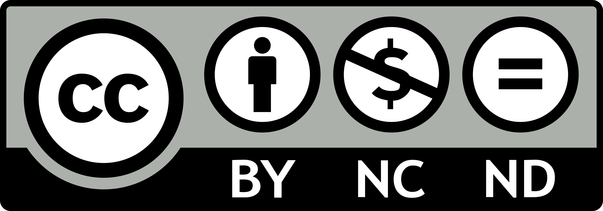

Ladakhi (Written Tibetan WT: ལ་དྭགས་སི་སྐད, Wylie Transliteration: la.dwags.si.skat) is a phonologically archaic variety of Tibetan spoken in Ladakh, India. The term ‘Ladakhi’, according to Zeisler (2018:78), refers to all the Western Tibetan varieties spoken in the Leh and Kargil districts of Ladakh, India. These varieties fall into two groups—Shamskatic Ladakhi, i.e., the dialects of Lower Ladakh in the north-west (Purik, Sham, Nubra) and Kenhatic Ladakhi, i.e., the dialects of Upper Ladakh in the south-east (Leh, Upper Indus, Lalok, the Changthang dialects, Gya-Miru, and Zangskar). For a more detailed classification, follow this link. We focused on the Leh variety spoken in and around Leh and also used as a lingua franca by the majority of the Buddhist population of Ladakh. The 2001 Indian Census reports 1,04,618 speakers of Ladakhi—which probably includes all the five varieties mentioned above, except Purik.
Map Credits: Bettina Ziesler
The Field Methods (Jan–May 2019) course taught by our advisor Dr. Gail Coelho was restricted to elicitation due to constraints in time and resources involved to physically go to the field. In this course, we chose Ladakhi since Jigmet Dorje, a Ladakhi native speaker, was residing in my hostel itself. The data for the study was mainly collected in two sessions a week with one and a half hours’ duration each over a period of three months in a formal classroom setting. Also, four more hours in two targeted group sessions dealing with interrogation-specific topics and a few extra sessions were also utilized to get an insight into the evidentiality issues in the language. Thus, the time spent collecting data was approximately 50 hours. Sessions were held in the Department of Linguistics, University of Delhi. Data collection in class was supervised by our instructor Dr. Coelho while the group sessions were unsupervised. Data elicitation began by using the 200-word modified Swadesh List (Swadesh 1952). We then made index cards with words for phonemic analysis. After figuring out phonemes and allophones, we began working on issues in morphosyntax. We worked with Jigmet roughly for the first two months but could not continue with him due to some unfortunate reasons. In the remaining month, we worked with Nilza Angmo, our second consultant.
The medium of communication during the elicitation with both the consultant was primarily English. We gave English sentences and asked for their equivalents in Ladakhi. Care was taken to ensure that sentences produced were natural and not just word-to-word translations. Since both of our consultants knew Hindi, we used it when it was easier to elicit using Hindi sentences. We also gave our consultants various constructed contexts to elicit data for issues concerning evidentiality as the language is susceptible to pragmatics. In the later stages of data collection, we also asked for grammaticality judgments. We collected data on the following topics with Jigmet: Nouns, Adjectives, Negation, Interrogation, and Valency Change. Jigmet also worked with targeted groups for their first session. With Nilza, we worked on Copulas, Tense, Aspect, and Mood. She worked with targeted groups for their second session. The focus of my group was on Interrogation. Our group prepared a questionnaire for eliciting data, which was approved by our supervisor. We worked with Jigmet for Yes/No Questions, Wh-Questions, Multiple Wh-Questions, and Alternate Questions, which we elicited based on sentences that we had previously collected in classroom sessions. Our group worked with Nilza to get the declarative sentences of the question sentences we had collected earlier.

A few of my classmates and I with our first consultant Jigmet Dorje (in black) after our discussion session.

The MA batch of 2017-19, along with our supervisor Dr. Gail Coelho (in orange) after the last session of Field Methods with our consultant Nilza Angmo (in striped pink).
Jigmet hails from Basgo, a town situated on the bank of the Indus River in Leh district, Ladakh. Since he spent only his first eight years in Ladakh and thereafter had extensive education and interaction in Classical and colloquial Tibetan, his Ladakhi speech marks plenty of Tibetan influence. Our second consultant Nilza Angmo hails from Wakha village in Kargil district from her mother’s side and Zangskar tehsil from her father’s side. Her family members speak Purik variety at her home, and with her father’s family, she speaks in the Zangskari variety. However, she feels comfortable speaking both dialects with the same fluency. She lived in the Zangskar region for a short time. She then was schooled in Leh at Jawahar Navodaya Vidyalaya. The medium of instruction was Hindi, which she is pretty fluent in, and she used the Leh dialect there for social interactions. Since Nilza grew up being exposed to so many dialects, she is well aware of the dialectal differences in Ladakhi, which proved useful to us as she also pointed out the reasons behind the phonological differences in her speech and the previous consultant’s speech. The data gathered and analyzed culminated in my M.A. thesis titled — ‘Interrogation in Ladakhi’.
During my field trip to Zangskar, I halted in Leh for nearly about two weeks. Here are some clicks of Leh town.

Most of the content on this site is licensed under a Creative Commons Attribution-NonCommercial 4.0 International License.